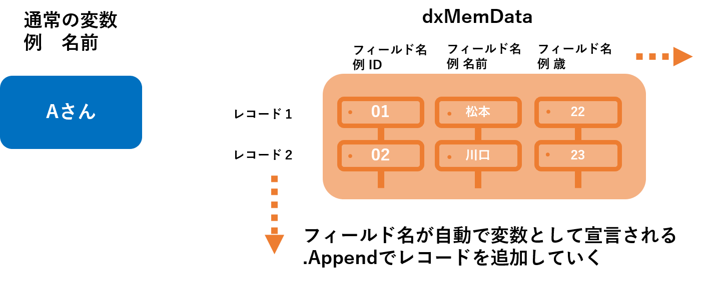

DelphiとSQLを使って
1.テーブルCRUD機能
2.テーブル印刷機能
を備えたプログラムを MJS LINK DX の原価率計算のぺージに作成してください
Delphiからボタンやテキスト欄を通じてSQL文を実行する。帰ってきたデータを変数（MemData）に保存して表示する。
＋レイアウトに変数を渡して紙用にカスタマイズして印刷する。
(デザイン側の設定でMemDataに結果を渡せば自動的にグリッドに表示される)
procedure TMAS290200f.MemdataSetSuru(var aMem: TdxMemData);
begin
with m_Query do
begin
if aMem.RecordCount > 0 then
begin
aMem.Close(); //念のため一回閉じる
end;
aMem.Open(); //そして開く
aMem.DisableControls; //描画を一旦止める処理（速度向上目的）
try
Close;
SQL.Clear;
SQL.Add('SELECT カラム１,カラム２ FROM データベース名');
SQL.Add('ORDER BY');
SQL.Add('ID');
Open(True); //クエリに入れたSQLを開く
while EOF = false do //データの終端じゃなかったら代入
begin
aMem.Append; //追加の準備（レコードを追加
aMem.FieldByName('Code').AsInteger := GetFld('カラム1').AsInteger;
aMem.FieldByName('Name').AsString := GetFld('カラム2').AsString;
aMem.Post; //追加完了（データ書き込み）
Next; //次の行
end;
finally
Close; //クエリを閉じる
dxmemdata1.EnableControls; //描画を再開する（速度向上目的）
end;
end;
end;
このコードはdelphiからデータベースにセレクト文を実行させ、返ってきた結果をMemDataの各フィールドに保存している。
※MemDataの各フィールドは、デザイン画面でTdxDBGridの各カラムと対応させた場合、そのまま画面に表示される事になる。
こちらのコードは関数なので
・データを変更した際の再表示
・ページを開く際
などで呼び出して使う。また、
var aMem: TdxMemData
は、引数なので呼び出す際に、保存したいMemData名を選択する必要がある。 例
procedure TMAS290200f.FormShow(Sender: TObject);//ページが読み込まれる時
begin
MemdataSetSuru(dxMemData1);
end;

・自動生成で宣言される変数は、MemData名＋フィールド名となる。
例、MemData名:dxMemData1 フィールド名:ID の場合
dxMemData1ID: TStringField;
dxMemData1.First; //レコードの最初の位置に移動する。試したが、違いそう。
for i := 1 to dxMemData1.RecordCount do; //１からレコードの数まで繰り替えす。
dxMemData1.Next; //一つ下（次）のレコード位置に移動すると思われる。試したが、違いそう。
RecordCountは、今いくつのレコードがあるかが記録されている。
DBGridに表示されているデータ順番を示すものである。recordIDの略？
・セレクト文などの直接変更を加えない命令文
Open(True);
で実行される。引数のTrueはSQLエラーで実行できなかった場合にsybaseで実行失敗した時と同じエラー内容が表示されるようになる。
・それ以外のデータベースに直接変更を加える命令文は
ExecSQL();
で実行される。
・EOFはEnd Of File の略でファイルの終端を表している。
・Whileは繰り返し文で最後のNextによって一行ずつ読みこまれ、最後の行まで繰り返されている。.Postで一旦処理をTDataSourceが読み込むのを許可していると思われる。
while EOF = false do //データの終端じゃなかったら代入
begin
aMem.Append; //追加の準備（レコードを追加
aMem.FieldByName('Code').AsInteger := GetFld('ID').AsInteger;
aMem.FieldByName('Name').AsString := GetFld('NAME').AsString;
aMem.Post; //追加完了（データ書き込み）
Next; //次の行（いらないかも）
end;
with m_Query do
begin
SQL.Clear;
SQL.Add('DELETE FROM _PLAYER WHERE id =1');
ExecSQL()
end;
with m_Query doはこれからｍ_Queryの機能をたくさん使うよという時に使用すると便利。 m_Queryのプロパティ以外もかける。
SQL系の文はほとんどm_Queryのプロパティなので、上のコードは
m_Query.SQL.Clear;
m_Query.SQL.Add('DELETE FROM _PLAYER WHERE id =1');
m_Query.ExecSQL()
を書き換えた形である。
m_DataModule.BeginTran(m_CorpConnect);//トランザクション
with m_Query do
begin
SQL.Clear;
SQL.Add('DELETE FROM _PLAYER WHERE id =1 ');
if(ExecSQL())then m_DataModule.Commit(m_CorpConnect) // コミット
else begin
m_DataModule.Rollback(m_CorpConnect); // ロールバック
end;
m_DataModule.BeginTran(m_CorpConnect);でトランザクションを開始、
if(ExecSQL())thenで【】内の関数が実行出来た場合、
m_DataModule.Commit(m_CorpConnect) コミット。出来なかった場合は
m_DataModule.Rollback(m_CorpConnect)ロールバックする。
データベースを直接変更しない場合（セレクト文など）は記述しなくてよい。（直接変更する場合も、SQL文が一つだけだと特に意味ないと思う）
以上、上記の文章は、資料がなくて最初の理解が難しかったのでまとめた物で、間違っているかもしれないのでご了承ください。
である